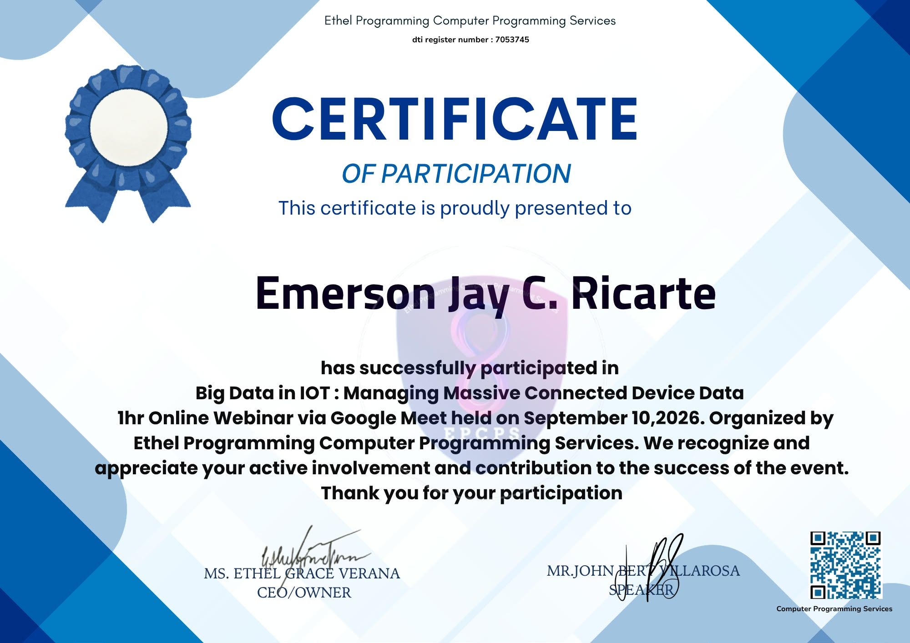
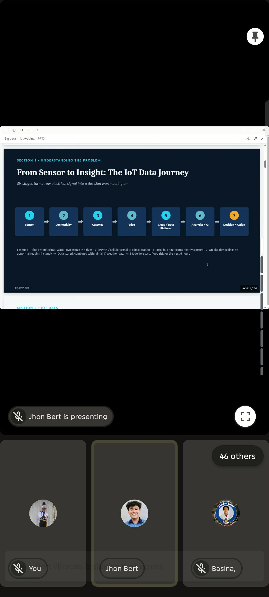
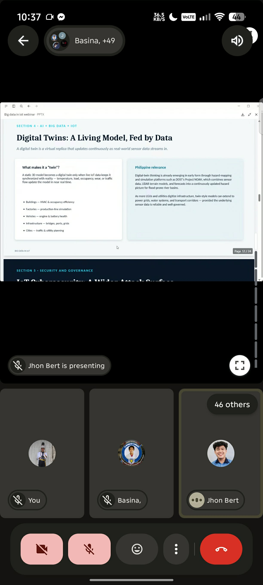
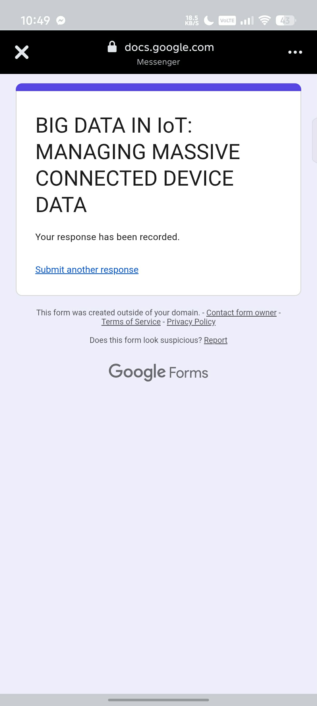

Certificate of Participation — Big Data in IoT: Managing Massive Connected Device Data, Ethel Programming Computer Programming Services, September 10, 2026

Live session — "From Sensor to Insight" slide

Live session — "Digital Twins" slide

Attendance form — response recorded
On September 10, 2026, I attended the one-hour online webinar "Big Data in IoT: Managing Massive Connected Device Data," conducted via Google Meet and organized by Ethel Programming Computer Programming Services. The session traced how a raw signal from a single sensor becomes something a business or government agency can actually act on — from sensor, to connectivity, to gateway, to edge processing, to a cloud or data platform, to analytics and AI, and finally to a decision.
A flood sensor's reading is just a number until a pipeline turns it into six hours of warning.
The facilitators used a flood-monitoring example to walk through the full data journey: a water-level gauge sends a signal over a low-power network to a base station, a local hub aggregates readings from nearby sensors, an on-site device flags anything abnormal instantly, and the combined data — cross-referenced with rainfall and weather data — feeds a model that forecasts flood risk hours in advance. The session also touched on digital twins, where continuous IoT data keeps a virtual model of a building, factory, or piece of infrastructure synchronized with what's actually happening in real time.
What stood out most was the scale of the problem — a single connected device produces a manageable stream of data, but thousands of them produce something that has to be filtered, aggregated, and prioritized long before it ever reaches a human decision-maker, which is exactly the kind of workload cloud platforms and modern data pipelines are built to absorb.
IoT data moves through a defined pipeline — sensor, connectivity, gateway, edge, cloud, analytics, decision — before it becomes useful.
Aggregating and filtering data close to the source (at the edge) is what makes massive device fleets manageable.
A digital twin is only as accurate as the live sensor data continuously feeding it.
Well-managed IoT data can turn a raw reading into an early warning with real, practical lead time.